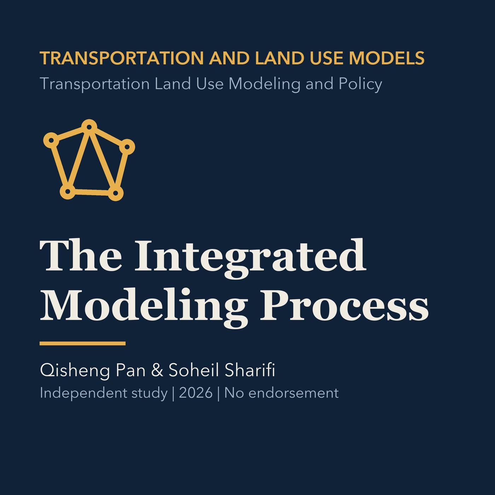

EPISODE 03
The Integrated Modeling Process
Explains feedback, model components, evaluation criteria, and scenario workflows, with a separate Torrance application.

- Stable GUID
1a720dde-379d-5cce-864f-6de8601c3f34- Release
- transportation-land-use-modeling-v2026.3
- SHA-256
4097a06352680f8d0688005a6137650412b83e0bf5d947bb26d991a66eff15bf